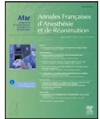

Disponible en ligne sur
SciVerse ScienceDirect
www.sciencedirect.com
Elsevier Masson France
EM|consulte
www.em-consulte.com

Recommandations formalisées d'experts
K. Nouette-Gaulaina,*, F. Lenfantb, D. Jacquet-Francillonc, A. Belbachird, A. Bournigault-Nuquete,
O. Choquetf, A. Claisseg, F. Dujarrich, D. Franconi, M. Gentilij, C. Majoufre-Lefebvrek, B. Marciniackl,
D. Péanm, P.-G. Yavordiosn, M. Leoneo
a Pôle d'anesthésie réanimation, service d'anesthésie-réanimation III, université Bordeaux-Segalen, hôpital des enfants, centre hospitalier universitaire de Bordeaux, place Amélie-Raba-Léon, 33076 Bordeaux, France
b Département d'anesthésie réanimation, université Pierre-et-Marie-Curie, groupe hospitalier Pitié-Salpêtrière, 75013 Paris, France
c Service d'anesthésie réanimation, centre hospitalier de Béziers, 34500 Béziers, France
d Service d'anesthésie réanimation, hôpital Cochin, 75014 Paris, France
e 15B, boulevard Voltaire, 21000 Dijon, France
f Service d'anesthésie réanimation A, hôpital Lapeyronie, centre hospitalier universitaire de Montpellier, 34295 Montpellier, France
g 440, avenue de Dunkerque, 59130 Lambersart, France
h 25, rue Péronne, 92150 Suresnes, France
i Département d'anesthésie réanimation, institut Paoli-Calmettes, 13009 Marseille, France
j Département d'anesthésie réanimation, CHP de Saint-Grégoire, 35760 Saint-Grégoire, France
k Service de chirurgie maxillofaciale et stomatologique, université Bordeaux-Segalen, centre hospitalier universitaire de Bordeaux, 33076 Bordeaux, France
l Service d'anesthésie réanimation chirurgicale, hôpital Jeanne-de-Flandre, 59037 Lille, France
m Service d'anesthésie réanimation chirurgicale Hôtel-Dieu, CHU de Nantes, 44000 Nantes, France
n Clinique Convert, 01000 Bourg-en-Bresse, France
o Service d'anesthésie et de réanimation, université de la Méditerranée, hôpital Nord, Assistance publique-Hôpitaux de Marseille, 13915 Marseille cedex 20, France
Historique de l'article :
Disponible sur Internet le 28 février 2012
Mots clés :
Bris dentaires périanesthésiques
Facteurs de risque de bris dentaires
Effets indésirables en anesthésie
Intubation difficile
Mauvais état dentaire
Introduction. – Les bris dentaires représentent la première cause de plaintes contre les anesthésistes. Les bris dentaires surviennent le plus souvent lors des intubations orotrachéales et les principaux facteurs de risque sont, premièrement, un état dentaire initial altéré et, deuxièmement, des difficultés d'intubation de la trachée et/ou de ventilation au masque. L'objectif de ce travail a été de rédiger des propositions formalisées d'experts pour la prévention des bris dentaires et pour le cas où un bris dentaire était constaté.
Méthode. – Les experts ont appliqué la méthode GRADE pour rédiger les propositions. Un groupe de 15 experts est composé de dix anesthésistes, un juriste qui est également anesthésiste, deux chirurgiens spécialisés en chirurgie maxillofaciale et deux chirurgiens dentistes. En absence de données de la littérature contributives, les recommandations sont basées sur un consensus d'opinion de l'ensemble du groupe. Les propositions formalisées d'experts sont donc issues de l'analyse de la littérature et des avis d'experts.
Résultats. – L'intégralité du groupe a suivi la procédure GRADE et les experts ont formalisé 31 propositions pour l'anesthésie du patient adulte et six pour l'anesthésie en pédiatrie. Le groupe d'experts souligne l'intérêt de la visite préopératoire dans la prévention des bris dentaires : le praticien doit identifier les facteurs de risque de ventilation au masque, d'intubation difficiles et décrire précisément l'état dentaire initial, plus particulièrement les incisives supérieures souvent traumatisées en cas de bris dentaires. Les patients doivent être informés du risque de bris dentaire par le praticien et la stratégie d'anesthésie doit être décidée avant l'induction, évitant une anesthésie avec un relâchement musculaire inadéquat et le contrôle des voies aériennes par un opérateur non expérimenté. Le choix d'une procédure adaptée lors de l'intubation notamment pourra probablement prévenir les bris dentaires, réduire le nombre de plaintes et le montant des réparations.
Discussion. – Ces propositions formalisées d'experts incluent des recommandations pour la prévention des bris dentaires et pour la prise en charge du patient en cas de bris dentaire constaté.
© 2012 Société française d'anesthésie et de réanimation (Sfar). Publié par Elsevier Masson SAS. Tous droits réservés.
☆ Ce travail est le résultat d'une collaboration entre la Société française d'anesthésie et de réanimation (Sfar), l'Association des anesthésistes réanimateurs pédiatriques d'expression française (Adarpef), la Société française de stomatologie et chirurgie maxillofaciale (SFSCMF).
* Auteur correspondant.
Adresse e-mail : karine.nouette-gaulain@chu-bordeaux.fr (K. Nouette-Gaulain).
A B S T R A C TKeywords :Perianaesthetic dental injury
Poor dentition
Risk factor for dental injury
Adverse events in anaesthesia
Difficult intubation
Introduction. – Dental injuries represent the most common claims against the anaesthesiologists. Dental lesions are frequent complications of orotracheal intubation and major causal factors are, firstly, preexisting poor dentition, and, secondly, difficult laryngoscopy and tracheal intubation. The aim of this work was to prioritize propositions for prevention in perianaesthetic dental injury and for care in case of dental trauma.
Method. – A GRADE consensus procedure consisting of three rounds was conducted. A purposively selected heterogeneous panel () of experts, comprising 10 practitioners in anesthesiology, one practitioner who is jurist and anaesthesiologist, two practitioners in maxillofacial surgery, and two practitioners in dentist surgery. In cases where the data did not appear conclusive, recommendations were based on the consensus opinion of the board members. The guidelines represent the best current evidence based on literature search and professional opinion.
Results. – The entire panel completed all three rounds and 31 plus six propositions were written for adult and paediatric clinical practice in anesthesiology, respectively. The experts highlight the interest of preoperative visit for minimizing dental injuries: the practitioner must identify risk factors for difficult intubation and ventilation, describe precisely patient's preoperative dental condition, including upper incisor most commonly involved teeth in dental trauma. Patients have to be informed by practitioner for risk dental injury and anesthesiology staff must choose his anesthesia protocol before the induction of intubation narcosis, avoiding insufficient anaesthesia and lack of experience by the anaesthesiologist. The choice of accurate proceeding during laryngoscopy, tracheal intubation and extubation for example, can aid in the prevention of dental injury, reduce the number of claims and the cost of litigation process.
Discussion. – These guidelines delineate an approach for the prevention of perianaesthetic dental trauma and for the immediate or urgent care in case of perianaesthetic dental injury.
© 2012 Société française d'anesthésie et de réanimation (Sfar). Published by Elsevier Masson SAS. All rights reserved.
En France, les bris dentaires sont responsables de 40 % des plaintes dirigées contre les anesthésistes-réanimateurs. Leur incidence au cours d'une anesthésie générale est estimée entre 0,02 et 0,1 % [1–6]. Des incidences allant jusqu'à 0,2 % ont été rapportées lors des intubations trachéales réalisées dans un contexte d'urgence. Pourtant, de nombreux sinistres ne font pas l'objet de réclamation et tous les sinistres déclarés ne sont pas suivis d'indemnisations. Dans le cadre d'un examen systématique réalisé après une anesthésie générale, 10 à 12 % de lésions dentaires ont été observées. Dans deux enquêtes réalisées sous l'égide de l'université de Poitiers en 1999 et 2007, les missions des experts en odontostomatologie concernaient les traumatismes maxillodentaires provoqués par l'activité des anesthésistes dans 10 % des cas en 1999 et 9 % en 2007 [7]. La sinistralité mesurée à partir des rapports des assurances est de 9,5 par an et pour 100 anesthésistes impliqués [8] et représente un coût variable selon les séries [9,10].
L'analyse des rapports d'assurance ayant conduit à une expertise révèle que les bris dentaires surviennent surtout lors de la laryngoscopie. Ils sont plus rarement observés au cours de l'anesthésie et lors de la phase de réveil. Deux facteurs de risque sont classiquement décrits : l'état de la denture du patient et la présence d'une intubation difficile.
De ce fait, le risque de bris dentaire doit être évalué dès la consultation d'anesthésie. Le patient doit recevoir une information sur ce risque et une trace écrite de cette information doit figurer dans le dossier. L'évaluation initiale conditionne la stratégie de prise en charge du patient, incluant la conduite à tenir en cas de bris dentaire. L'ensemble de ces différents points a fait l'objet de propositions formalisées d'experts, après analyse de la littérature et avis experts, développées et argumentées dans cet article. Les auteurs ont utilisé la méthode GRADE pour valider les propositions courtes.
L'analyse des dossiers d'expertise montre que l'existence d'une intubation difficile et l'état de la denture du patient sont les deux principaux facteurs de risque de bris dentaire en anesthésie. Ainsi, la consultation d'anesthésie est une étape essentielle pour l'évaluation et la prévention de ce risque.
La dent est composée de la couronne recouverte d'émail et de la racine. La jonction entre la couronne et la racine constitue le collet de la dent. À l'état physiologique, la racine est enfouie dans l'os alvéolaire et la gencive ne laisse apparaître que la couronne.
Afin de mieux évaluer le risque de bris dentaire, il convient de faire quelques brefs rappels de dentisterie avant de développer les points à aborder lors de la consultation d'anesthésie.
2.1.1.1. Restauration dentaire. La restauration d'une dent naturelle antérieure est faite avec une résine composite ou une facette partiellement ou totalement collée directement sur la dent, ce qui en fait un élément très fragile. La restauration siège au niveau d'un angle coronaire, d'une face proximale du bord libre ou du collet. Dans ce dernier cas, il faut faire attention aux incisives (inférieures et supérieures) dont le diamètre cervical à ce niveau est faible et fragilise la jonction coronoradiculaire. Par ailleurs, les reconstitutions intéressent les bords libres et les angles proximaux suite à des traumatismes ne font que reconstituer le volume manquant. Il existe souvent des fêlures associées dont les axes sont variables. Ce sont des facteurs supplémentaires de fragilisation de la dent. Certains matériaux utilisés ont un mimétisme tel qu'il est difficile de les identifier sans un examen attentif. Parfois, il est noté une
différence de texture et de couleur qui témoigne du vieillissement de l'obturation et donc de sa fragilisation.
2.1.1.2. Prothèses amovibles. Elles sont de siège et de nature variables. Les prothèses amovibles partielles sont réalisées en résine, avec ou sans un chassis métallique. Les dents sont en résine ou en céramique. Les prothèses amovibles partielles ont divers systèmes de rétention aux dents restantes dont les plus classiques sont les crochets. Les prothèses à chassis métallique peuvent avoir des systèmes de rétention dont la contrepartie est intégrée dans la couronne prothétique fixée. Ces systèmes dits par fraisage ou par attachement ont une grande diversité de formes toujours fondées sur le principe partie mâle/partie femelle. Ces éléments ne doivent pas être déformés. D'autres systèmes situés à l'intrados de la prothèse amovible permettent à la prothèse amovible de venir se fixer par des systèmes de rétention unitaire. Ces systèmes solidarisés à des implants ou à des racines naturelles résiduelles sont fragiles et ne doivent pas être déformées. En pratique, toute prothèse amovible doit être systématiquement déposée avant l'arrivée du patient au bloc opératoire.
2.1.1.3. Facettes cosmétiques. Les facettes, généralement en céramique, sont collées sur la face vestibulaire des incisives/canines. Elles exposent au risque de décollement et/ou de fracture de l'élément cosmétique, associé éventuellement à un bris dentaire.
2.1.1.4. Prothèses fixes. Parmi les prothèses fixes, on différencie les éléments prothétiques unitaires (couronne sur un pilier dentaire ou implantaire) des éléments pluriaux (bridge reposant sur plusieurs piliers dentaires ou implantaires). On distingue plusieurs types d'ancrage qui représentent la partie non visible sur laquelle se positionne l'élément prothétique. Il peut s'agir d'une dent naturelle vivante, uniquement au niveau coronaire ou d'une dent ayant subi un traitement endodontique (radiculaire). L'ancrage peut également être coronoradiculaire impliquant une fixation par vis ou tenon radiculaire avec un matériau de reconstitution coronaire (résine composite), ou reconstitution coulée en métal (inlay-core, moignon, faux-moignon). Enfin, l'ancrage peut être limité à la portion coronaire (résine composite). L'importance et la complexité des moyens de reconstitution participent à la fragilisation des piliers dentaires supports de prothèses fixées. La différenciation des différents types d'ancrage renseigne sur la fragilité de celui-ci, un ancrage coronoradiculaire ayant un risque augmenté de fragilité, car sensible à un effet levier.
2.1.1.5. Éléments unitaires. Les couronnes résinométalliques assurent une rétention physique de l'élément cosmétique (facette ou couronne entière). Ces prothèses sont généralement scellées, peu fiables, et de technologie dépassée. Les couronnes céramométalliques ont une rétention physicochimique de l'élément cosmétique. Elles sont scellées ou collées. Les couronnes céramocéramiques ne possèdent pas d'armature métallique. Elles sont parfois difficiles à identifier. Enfin, les dents monoblocs (dites « dent à pivot » ou de Richmond) sont d'un seul tenant (ancrage radiculaire et partie coronaire). L'ajustage et la rétention sont défavorables avec des risques d'infiltration du support et de fragilisation du pilier dentaire. Les ciments et adhésifs actuels sont très performants et n'exposent pas au risque de descellement à proprement parler. En effet, en dehors d'un problème initial lors du scellement non optimisé ou d'une configuration particulière, leur descellement implique une force en traction verticale, ce qui n'est pas le cas lors de l'anesthésie. La perte de l'élément prothétique met parfois en évidence un bris dentaire (fracture) associé ou une dent fragilisée par une récidive de carie sous-jacente. En conséquence, il ne peut y avoir de descellement si le pilier est fiable et le scellement réalisé dans des conditions optimales. En revanche, la partie cosmétique
reste très fragile, car les épaisseurs de céramique ne sont pas conçues pour résister à ces types de pression/levier de force. Une céramique fracturée n'est pas réparable au fauteuil, elle impose une dépose et un retour au laboratoire de prothèse.
2.1.1.6. Prothèses pluriaux. Elles concernent plusieurs piliers dentaires solidarisés. Les bridges, par définition, comportent deux piliers dentaires et un élément intermédiaire au minimum. Les bridges sont de plus ou moins grande étendue. Dans certains cas particuliers, un élément du bridge peut être en extension, et potentialise un effet de levier. Un bridge peut combiner des éléments cosmétiques ou métalliques visibles sur une même pièce prothétique. Il peut être scellé ou collé sur des piliers dentaires reconstitués par des ancrages (cf. prothèse unitaire).
2.1.1.7. Attelles de contention. Ce ne sont pas à proprement parler des prothèses fixes. Elles maintiennent entre elles des dents fragiles sur le plan parodontal. Il s'agit de dispositifs ajustés à la face linguale ou palatine des dents : fils métalliques pleins ou torsadés, grilles métallique ou synthétique, le tout est collé par des résines composites. Les attelles de contention sont des dispositifs fragiles sur des dents au parodontite exposé.
2.1.1.8. Implants. Ils sont aujourd'hui des dispositifs en titane, intraosseux, qui reconstituent une racine artificielle dans un secteur édenté ou un complément de rétention pour une prothèse amovible. Un pilier prothétique, vissé sur l'implant, constitue l'ancrage qui reçoit la couronne prothétique. Sur un secteur édenté concernant plusieurs dents absentes, plusieurs implants peuvent être posés. Les recommandations actuelles préconisent une solidarisation des éléments prothétiques en cas d'implants multiples juxtaposés. Un implant correctement ostéo-intégré ne peut pas être mobilisé. En revanche, l'élément prothétique, cosmétique, supra-implantaire reste fragile, ainsi que la connectique.
À l'interrogatoire, le praticien recherche la notion de bris dentaires si un incident est rapporté par le patient lors d'une anesthésie antérieure, en précise les circonstances de survenue, les dents concernées et les suites données à cet incident. L'interrogatoire identifie certains antécédents médicaux ou traitements connus pour accroître la fragilité dentaire : traumatisme dentaire, radiothérapie céphalique et chimiothérapie, bruxisme important, diabète et maladies auto-immunes, âge, tabac, maladie carieuse précoce chez l'enfant... Le praticien recherche également la notion de soins dentaires en cours ou prévus, identifie les dents qui ont fait l'objet d'une restauration, le type de restauration et recherche l'existence de prothèses. Il en précise le nombre et le type. Les items relatifs à l'état buccodentaire sont au mieux intégrés dans un questionnaire rempli par le patient en vue de la consultation d'anesthésie (Fig. 1).
L'examen clinique évalue les facteurs de risque de ventilation au masque et d'intubation difficiles et apprécie l'état dentaire, facteurs principaux de risque de lésions dentaires liées à l'anesthésie [1,11].
2.1.3.1. Évaluation du risque d'intubation et/ou de ventilation au masque difficiles. Les critères prédictifs d'intubation difficile ont été précisés dans la conférence d'experts réactualisée en 2006 [12]. Ces critères sont recherchés et consignés dans le dossier. L'ouverture de bouche, le score de Mallampati et la distance thyromentonnière sont systématiquement évalués. D'autres critères sont également importants à rechercher. Il est conseillé d'apprécier la mobilité mandibulaire et la mobilité du rachis cervical (angle fait par la tête en extension maximum sur le cou et en flexion maximum supérieure à 90°). Enfin, certaines situations
Le risque dentaire dans le cadre d'une anesthésie générale existe et il est d'autant plus grand que vos dents sont fragiles. Vous remplirez ce questionnaire sur votre état bucco-dentaire, si vous avez répondu plusieurs fois par oui à ce questionnaire et/ou si vous avez un doute sur l'état de vos dents nous vous conseillons de consulter votre dentiste à ce sujet et d'en discuter avec le médecin anesthésiste-réanimateur.
Lors de la consultation d'anesthésie, l'anesthésiste discutera avec vous de la conduite à tenir la plus appropriée dans votre cas.
1/ Portez-vous un appareil (ou prothèse) dentaire ?
oui Haut Bas
non
2/ Avez-vous des dents mobiles ou avez-vous déjà été traité pour des problèmes parodontaux, de mobilité de dent, de saignement?
oui non
3/Avez-vous des dents fragiles : restaurations (composites ou amalgames), facettes, couronnes, pivots (ou ancrage radiculaire), bridge ou implants ?
oui non
4/Etes-vous en cours de traitement chez votre dentiste ?
oui non
5/ Avez-vous déjà eu un problème dentaire lors d'une anesthésie générale ?
oui non
Date, Nom, prénom : Signature :
Fig. 1. Proposition de questionnaire préanesthésique à remplir par le patient.
cliniques augmentent le risque d'intubation difficile : un index de masse corporelle supérieur à 35 kg/m2, un syndrome d'apnées obstructives du sommeil avec tour de cou supérieur à 45,6 cm, une pathologie cervicofaciale et un état préclamptique.
Les facteurs de risque de ventilation au masque difficile sont également recherchés. En effet, une ventilation au masque difficile multiplie par quatre le risque d'intubation difficile et peut conduire à des situations à risque de bris dentaire. Les critères de ventilation au masque difficile ont été précisés dans la conférence d'experts [12]. Sont considérés comme facteurs de risque de ventilation au masque difficile, l'âge supérieur à 55 ans, un index de masse corporelle supérieur à 26 kg/m2, une limitation de la protrusion mandibulaire, le ronflement, la présence d'une barbe et une édentation (la présence de ce dernier critère excluant bien sûr le risque de bris dentaire). La présence d'au moins deux critères est prédictive d'une ventilation au masque difficile.
L'ensemble des signes prédictifs d'intubation et de ventilation au masque difficile est consignés dans le compte rendu d'anesthésie. Le risque est clairement identifié et les difficultés quantifiées.
2.1.3.2. Examen de l'état dentaire. Il faut porter une attention particulière aux incisives supérieures et inférieures. Les lésions sont le plus souvent décrites au niveau maxillaire [1,4–6,13,14]. Il
apparaît que l'évaluation du risque ne peut pas se limiter à un interrogatoire [1,15]. Elle y associe un examen clinique minutieux visant à préciser la nature et la qualité des reconstitutions restauratrices ou prothétiques, l'existence d'un traitement orthodontique, une mobilité des prothèses, ou des antécédents de traumatisme, de maladie et de traitement parodontaux, l'état et la qualité des tissus dentaires (degré de minéralisation, présence de fêlures, etc.) et l'état du parodontite.
L'inspection rapide apprécie l'état d'hygiène dentaire par la présence de tartre ou d'une gingivite et l'existence de lésions dentaires préexistantes (dents cassées, débris radiculaires...). Le degré d'altération sévère (visualisation des racines) est également noté, car à l'origine d'une fragilité et d'une mobilité accrue de la dent. En cas de pathologie parodontale, l'exposition radiculaire est la conséquence d'une perte d'attachement parodontale de la racine. La racine peut être exagérément visible témoignant d'un ancrage radiculaire de la dent diminué. Toutefois, la hauteur de racine visuellement exposée n'est pas le seul critère pour parler de maladie parodontale, ni pour évaluer le risque de mobilisation mécanique. Il faudrait idéalement évaluer par la palpation la mobilité dentaire des dents concernées. La palpation des éléments prothétiques fixes et des dents parodontolysées permettrait d'évaluer en préopératoire leur degré de mobilité (échelle de 1 non mobile à 4 très mobile).
Chez l'enfant, les premières dents temporaires (ou déciduales) apparaissent à partir de six mois. La dentition temporaire est complète vers trois ans. Les dents temporaires ont des racines peu profondes qui les rendent plus susceptibles à d'éventuels traumatismes. La période de remplacement des dents temporaires par les dents définitives est particulièrement à risque de traumatisme dentaire. Elle s'étale de trois ans à 14 ans. Les traumatismes sur des dents temporaires peuvent affecter le développement des dents définitives. L'utilisation d'un laryngoscope dont la taille de lame est inadaptée à la morphologie de l'enfant augmente le risque de bris dentaire.
La carie dentaire est une pathologie fréquente, notamment chez l'enfant. En fragilisant les dents temporaires, elle augmente le risque de fracture. Le « syndrome du biberon » est plus spécifique de l'enfant de 18 à 48 mois (enfant s'endormant avec un biberon rempli de liquide sucré) entraînant la destruction des dents temporaires. La polycarie infantile en rapport avec une surconsommation de sucre se rencontre chez les enfants plus âgés, de cinq à dix ans. Chez les enfants plus âgés (dix à 12 ans), l'existence d'un traitement orthodontique est identifiée précisément. Les dispositifs fixes limitant l'ouverture buccale restent tout de même assez peu répandus et sont à démonter. Les dispositifs fixes comme les grilles antilangue (ou antisuccion) n'entraînent pas de limitation d'ouverture, mais constituent un véritable obstacle (type grille verticale) au niveau du 1/3 antérieur du palais : ces dispositifs sont également à faire démonter impérativement avant une anesthésie générale.
Les signes relatifs à l'état dentaire sont consignés de façon compréhensible sur le dossier d'anesthésie, en utilisant par exemple un schéma dentaire simplifié (Fig. 2). Les études révèlent que cette description n'est que peu fréquemment retrouvée dans les dossiers [1,4,10,13,15]. Un encart spécifique est disponible dans le dossier d'anesthésie. Le rapport est centré sur les dents les plus
exposées au risque de lésions, les incisives supérieures et inférieures. Cela n'exclut pas l'identification des problèmes posés par les autres dents. L'information est concise, précise et claire. Un item isolé « dents fragiles » sans aucune description des problèmes présentés par le patient est insuffisant. L'utilisation d'un schéma permet de décrire les dents des deux arcades reflétant au mieux l'état dentaire complet. Il peut s'agir d'un schéma simple avec une légende associant éventuellement un code couleur aidant à identifier rapidement la ou les dents à risque (Fig. 2).
Lors de la consultation d'anesthésie, une photographie de la denture du patient se conçoit. Si un cliché photographique est un support envisageable, il ne faut pas négliger les problèmes qui en découlent tels, la réalisation du cliché au cours de la consultation d'anesthésie, la qualité du dit cliché, sa lecture au bloc opératoire par le médecin anesthésiste en charge du patient, l'autorisation écrite du patient. Quoi qu'il en soit, si un cliché est réalisé, il ne dispense en aucun cas de la réalisation d'un examen clinique.
Les bris dentaires tels qu'ils sont rapportés dans les différentes études et rapports d'assurance ne relèvent pas tous du même mécanisme. Les anomalies constatées lors de la consultation d'anesthésie n'exposent pas aux mêmes risques, ni aux mêmes lésions et donc aux mêmes préjudices. Chez un patient aux dents saines, le risque de bris dentaire est lié aux possibles difficultés d'intubation. Dans ce cas, les lésions observées sont le plus souvent des fractures de la dent.
En cas de traumatisme dentaire préexistant, des fêlures sont difficilement identifiables à l'examen clinique, mais peuvent se transformer en fracture lors de la laryngoscopie. Dans le cas des prothèses ou des restaurations, les lésions dues à la laryngoscopie
X: Dent absente non remplacée B: Bridge C: Couronne P: Pivot
SC: Soins en cours PAT: Prothèse amovible totale R: Restaurations composites et amalgames
P1: Parodontolyse mineure P2: Parodontolyse majeure M: Dent mobile
Fig. 2. Schéma proposé pour consigner l'examen clinique dans le dossier d'anesthésie utilisant des codes.
relèvent du descellement de la prothèse (associé ou non à une fracture dentaire) ou d'une détérioration du matériau pour la restauration (associé ou non à une fracture dentaire).
En cas d'algéolyse, les lésions observées sont des subluxations ou des luxations de la dent. Lorsque l'algéolyse touche les dents maxillaires, le risque est lié aux difficultés d'intubation trachéale. Si elle concerne les dents mandibulaires, les lésions surviennent après morsure appuyée d'une canule oropharyngée, de la sonde trachéale, du tube d'un dispositif supraglottique ou d'un calendents. En cas d'algéolyse terminale, une mobilité exagérée peut être observée. Toutes ces situations sont à risque de luxation ou de chute de la dent.
À la consultation d'anesthésie, la constatation d'un risque conduit le praticien à informer le patient et à envisager une stratégie de prévention. Cette stratégie tient compte des délais entre la consultation et l'acte chirurgical. En cas de risque identifié, le praticien suggère une prise en charge odontostomatologue avec panoramique dentaire (si besoin) permettant de fixer l'état antérieur et de mettre en œuvre des mesures thérapeutiques ou préventives. Lors de cette consultation, l'opportunité de prodiguer des soins dentaires et parodontaux, d'envisager la réfection d'une prothèse, et de réaliser l'avulsion des dents les plus touchées ou la confection de gouttière de protection est éventuellement envisagée.
La réfection d'une prothèse ou des soins dentaires contribue à assainir la bouche, mais ne diminuent pas le risque dentaire. L'extraction des dents à un stade terminal relève plutôt de la mise en condition buccale avant chirurgie, mais ne contribue pas à la diminution du risque de bris dentaire pour les dents restantes. L'utilisation d'une gouttière pourra être discutée. La réalisation d'une gouttière sur mesure permet une protection des dents maxillaires de meilleure qualité que les gouttières standards [16], sans aggraver les conditions d'intubation [17]. La proposition de réaliser une gouttière implique un délai nécessaire à sa réalisation et un coût pour le patient que celui-ci est libre d'accepter ou de refuser.
Le praticien informe oralement et remet un document au cours d'une consultation d'anesthésie précisant que les traumatismes dentaires sont possibles au cours de toute anesthésie. La preuve de cette information est consignée dans le dossier d'anesthésie. La note d'information est remise au patient. Celle-ci lui recommande de signaler toute prothèse ou toute fragilité dentaire particulière, notamment au niveau des incisives supérieures et inférieures (Fig. 1). Si l'utilisation d'une gouttière est retenue, le praticien doit probablement recommander l'utilisation d'une gouttière sur mesure plutôt que d'une gouttière standard, expliquer la différence à son patient et tracer l'information dans le dossier « incité à fournir un protège-dents sur mesure ».
Le praticien peut choisir diverses stratégies dans l'objectif de diminuer le risque de bris dentaire. Certaines de ces stratégies, telles que la prise en charge de l'intubation difficile prévue, s'inscrivent dans le cadre de la prise en charge standard du risque anesthésique, d'autres ne se justifient parfois que par le risque dentaire encouru. Elles doivent être expliquées au patient. Le
praticien informe le patient et anticipe la gestion du risque. Les options proposées et les choix du patient sont consignés dans le dossier.
Si l'acte chirurgical le permet et en l'absence de contre-indication, la réalisation de la chirurgie sous anesthésie locorégionale seule est proposée au patient. En effet, en l'absence de complication, d'un refus éventuel ou d'un échec, elle permet de s'affranchir du contrôle des voies aériennes supérieures et donc n'expose pas le patient au risque de bris dentaire.
Si une anesthésie générale est nécessaire, certaines options peuvent être envisagées.
Une gouttière de protection dentaire peut apporter une sécurité en diminuant les forces exercées sur les incisives supérieures, mais elle ne protège pas complètement contre les bris.
L'intubation nasale sous fibroscope : classiquement proposée dans le cadre de l'intubation difficile prévue, cette technique permet de contrôler les voies aériennes sans introduire de matériel dans la bouche, avec un risque de bris dentaire limité. Dans certaines situations à risque de bris dentaire élevé (associées à une intubation difficile), elle peut être envisagée. Les techniques actuelles de sédation permettent d'assurer le geste en toute sécurité. Cette technique nécessite la collaboration du patient. Elle est expliquée en consultation d'anesthésie. Le choix de cette technique imposant une traçabilité de l'acte et du matériel est clairement justifié dans le dossier d'anesthésie.
Un relâchement musculaire optimal est recherché au moment de l'intubation avec laryngoscopie. Un agent myorelaxant peut être utilisé lors de l'induction de l'anesthésie [18]. Il améliore le relâchement musculaire, facilite l'intubation trachéale et donc diminue le risque de bris dentaire [19,20]. Aussi, en dehors des contre-indications, le praticien peut réaliser l'intubation trachéale avec un curare chez les patients identifiés à risque élevé de bris dentaire. Ce choix étant justifié, il est consigné dans la conclusion de la consultation d'anesthésie. Le cas échéant, l'interaction synergique entre le propofol et les morphiniques permet également un relâchement musculaire optimal pour une intubation de la trachée [21–23].
En cas de risque de bris dentaires, le contrôle des voies aériennes supérieures est assuré par un opérateur expérimenté. À l'arrivée d'un enfant au bloc opératoire, l'absence de mobilité dentaire est vérifiée de nouveau avant l'induction, car chez l'enfant, l'évolution du statut dentaire est rapide et implique la confrontation des données décrites à la consultation à celles observées avant l'induction.
Les dispositifs supraglottiques (DSG) sont de taille, de forme et de composition (matériaux) très différents en fonction du fabricant. On distingue deux catégories :
L'utilisation d'un DSG peut conduire à un traumatisme dentaire à tout moment de l'anesthésie. Les consignes d'insertion comprennent la nécessité d'un appui de l'extrémité distale du DSG sur le palais dur, puis le palais mou grâce à un accompagnement avec l'index [24]. Pendant l'anesthésie, il est classiquement recommandé d'utiliser une cale-dent pour limiter le risque de morsure du tube, qui peut être favorablement remplacé par des compresses roulées en cas de risque de bris dentaires. Le retrait du DSG s'effectue semi-dégonflé ou dégonflé en cas d'incisive fragile. Les traumatismes dentaires sont exceptionnellement rapportés dans la littérature et sont secondaires à l'insertion ou au retrait du DSG réutilisable [4,25,26]. De nombreuses études ne retrouvent aucun traumatisme dentaire, y compris sur une grande population de patients [27–30], ou seulement une dent ébréchée lors du retrait du DSG parmi les 115 patients inclus [31].
En conclusion, les études et les cas cliniques ne rapportent pratiquement aucun traumatisme dentaire avec les DSG. Le traumatisme dentaire risque de survenir pendant l'ablation du DSG si le patient serre les dents à ce moment. Le cale-dent doit être souple.
Le masque laryngé d'intubation ou LMA-FastrachTM se différencie du masque laryngé classique par son tube rigide courbé à 90°. La version à usage unique en PVC a progressivement remplacé le modèle réutilisable en silicone. Le LMA-FastrachTM est utilisé dans un contexte d'intubation difficile et/ou de ventilation au masque facial difficile.
L'insertion se fait grâce à un mouvement circulaire transmis par la poignée rigide. Le risque de traumatisme dentaire existe de la même manière qu'avec tous les DSG : lors de l'insertion, une fois en place et au moment du retrait. Aucun cas de traumatisme dentaire n'a été rapporté dans la littérature. Comparé aux laryngoscopes (Macintosh, Glidescope, Mac Coy et Mac Grath), le LMA-FastrachTM diminue le risque de traumatisme dentaire sur mannequin [32]. En revanche, le nombre d'études évaluant le risque entre le bris dentaire et les DSG n'est pas suffisant pour donner une recommandation forte.
La canule oropharyngée doit être évitée chez les patients dont l'état dentaire est précaire ou avec un bruxisme important [5,33]. Le risque de traumatisme dentaire existe lors de l'insertion, pendant l'anesthésie et au moment de l'ablation. La morsure du dispositif et la fermeture de la bouche pendant la ventilation au masque facial sont les circonstances de traumatisme. En effet, dans ces conditions, la pression des maxillaires est concentrée uniquement entre les incisives inférieures et supérieures. Cette canule représente la seconde cause de bris dentaire après la laryngoscopie, ce qui représente une incidence de 20 % des bris dentaires dans certaines séries [34]. Pour assurer la liberté des voies aériennes chez des patients obèses ou avec macroglossie, une canule nasopharyngée peut être préférée à une canule oropharyngée. Une fois l'intubation trachéale réalisée, il faut éviter l'utilisation d'une canule orale en cas d'incisives fragiles et préférer des compresses roulées afin d'éviter la morsure de la sonde.
Lors de la laryngoscopie, les dents les plus exposées sont les incisives supérieures (les dents 11 et 21 le plus fréquemment) [15,35]. Les lésions sont liées à la pression exercée par le talon ou la collerette de la lame du laryngoscope sur les dents maxillaires, ces dernières servant de point d'appui [36]. La distance entre les dents et la lame est liée au degré d'ouverture de bouche du patient, au choix de la lame (chez l'adulte et chez l'enfant), à la technique de l'opérateur et à la position de la tête.
Les « obstacles théoriques » pour visualiser la glotte au cours d'une laryngoscopie directe sont attribués à deux groupes d'éléments : ceux postérieurs et fixes parmi lesquels les dents du maxillaire supérieur et ceux antérieurs et mobiles incluant langue, épiglotte, mandibule [37,38]. La mobilisation en haut et en avant de la mandibule, de la base de la langue (simple extension du cou en routine et position du renifleur « sniffing position » chez l'obèse ou le rachis bloqué) augmente la distance entre les obstacles antérieurs et postérieurs, accroît l'espace sous-mandibulaire et facilite la laryngoscopie [39]. Les forces de traction requises pour la laryngoscopie avec une extension prononcée de la tête sont moins importantes que lors de la « sniffing position » (position amendée de Jackson) probablement par réduction du volume lingual à mobiliser lors de la laryngoscopie [40]. D'une façon générale, la grande variabilité interindividuelle des forces suivant l'installation de la tête incite l'opérateur expérimenté à modifier la position de la tête dès que le niveau de traction lui paraît trop important ou qu'un contact dentaire avec la lame est constaté.
La laryngoscopie chez un patient à risque dentaire élevé nécessite un opérateur expérimenté avec l'assistance éventuelle d'un aide pour réaliser manuellement une subluxation mandibulaire, afin de faciliter l'ouverture buccale et l'exposition glottique.
Les forces exercées lors de la laryngoscopie sont peu différentes entre opérateurs novices et expérimentés. Elles sont reliées au risque potentiel de traumatisme dentaire du fait de leur intensité, de la durée de laryngoscopie et d'une technique insuffisante [41–43]. Les forces exercées dans l'axe du manche du laryngoscope sont les plus importantes. Elles sont égales et de sens opposés à celles réalisées par les tissus qui réduisent l'axe de vision. Elles doivent être réalisées avec une intensité progressive. Ces forces peuvent créer en effet une rotation du laryngoscope. Elles sont inversées par la paume de l'opérateur pour éviter le contact avec les dents et la création d'un point de pivot [44]. La présence d'incisives supérieures et en particulier proéminentes avec une hauteur supérieure à 1,5 cm est reconnue comme un des facteurs les plus importants pour augmenter les forces de traction et la durée de la laryngoscopie. Cela est particulièrement vérifié si sont associés un surpoids, une protrusion limitée de la langue, une ouverture buccale inférieure à 5 cm, une extension limitée du rachis [45,46].
L'appui sur le maxillaire supérieur, et par conséquent sur les incisives supérieures, améliore l'axe de vision en particulier dans le cas de laryngoscopie difficile, ce qui explique l'incidence accrue de dommage dentaire lors de l'intubation difficile [47]. Chez le nouveau-né, en dépit de l'absence de dent, ce type d'appui devrait être également évité. L'examen de la dentition des enfants nés prématurés et ayant bénéficié d'une laryngoscopie révèle de façon statistiquement significative des anomalies de développement des dents du maxillaire supérieur droit, affectées le plus souvent par les traumatismes de laryngoscopie. La période néonatale est une période d'amélogénèse. Les traumatismes dus à l'intubation s'ajoutent aux perturbations du métabolisme (du calcium, entre autres) et entraînent des anomalies du développement de la dentition (lactéale ou définitive). Les anomalies constatées (secondaires aux effets de la pression sur la muqueuse, le déplacement « folliculaire », des traumatismes localisés) sont l'hypoplasie de l'émail, la déviation de la couronne ou de la racine, la dilacération des dents temporaires, le retard à l'apparition des dents temporaires, la déficience de l'amélogénèse et l'anomalie de position des incisives [48–50].
L'ouverture buccale pour l'introduction d'une lame du laryngoscope de tout type dans la bouche se fait en prenant appui avec le pouce et l'index sur les prémolaires réputées plus solides en évitant
les canines et incisives ou mieux par subluxation mandibulaire réalisée par un aide. La lame de Macintosh est classiquement utilisée pour une intubation de la trachée, y compris en cas de risque de bris dentaire. En revanche, l'utilisation d'autres types de lame pourrait être discutée. Les lames sans collerette (Bizzarri-Guiffrida) ou réduites (lame de Cranwall) ont été conçues pour minimiser le risque de lésions d'incisives supérieures, mais sont peu diffusées. Une lame de Macintosh modifiée avec un talon plus réduit à l'extrémité proximale augmente la distance dent-lame et diminue le nombre de contacts sans altérer la vision du larynx [36,51,52]. La portion distale d'une grande lame courbe de Macintosh est souvent plus efficace que toute la longueur d'une lame plus courte lors de la laryngoscopie standard [53]. Les lames de Macintosh type E (English) comparées aux lames Macintosh standards, apportent une meilleure vision en cas de laryngoscopie difficile [54]. Les lames Macintosh comparées aux lames de Miller facilitent l'intubation en offrant un espace plus important pour le passage de la sonde d'intubation chez des patients sans critère prédictif d'intubation difficile, les lames droites assurent une meilleure ligne de vision glottique [55].
Chez l'enfant, il faut utiliser une lame de laryngoscope dont la taille est la mieux adaptée à la morphologie de l'enfant, même en présence de dents fragilisées notamment en cas de « syndrome du biberon » [56].
D'une façon générale, les vidélaryngoscopes (VL) permettent une intubation trachéale avec une durée de procédure réduite comparée à une laryngoscopie traditionnelle dans le contexte de l'intubation difficile prévue, sans alignement des trois axes oraux, pharyngés et laryngés et avec moins de force de traction en particulier sur les incisives supérieures [57,58]. Leur introduction buccale est faite de façon médiane sans récliner la langue. Deux types de VL sont sur le marché, soit avec gouttière latérale, soit avec une lame courbée à 60° nécessitant l'utilisation d'un mandrin. Seul le CMac® à lame de Macintosh nécessite une introduction conventionnelle dans la bouche. De tels VL à lame de Macintosh standard réduisent en routine l'utilisation de mandrin d'intubation [59].
Le risque dentaire est présent lors de l'introduction de lame dans la bouche quel que soit le système utilisé. La technique d'ouverture de la bouche est identique à celle de la laryngoscopie standard. Un certain degré de difficulté d'insertion est retrouvé pour la plupart de ces dispositifs compte tenu de leur dimension générale [60,61]. Pour certains dispositifs, il est possible d'introduire séparément l'étui protecteur du VL, ce qui facilite la mise en place et limite le risque dentaire. Ces dispositifs se distinguent également par des épaisseurs de lame ou de consommable à usage unique très variables qui sont prises en compte chez des patients à risque dentaire élevé et à ouverture de bouche réduite [62,63]. La traction se fait verticalement avec un VL à lame angulée et le risque d'appui sur les incisives supérieures est moindre. La sonde montée sur le stylet béquillé peut être également une cause de traumatisme dentaire. Le VL de Bonfils est un dispositif pouvant être utilisé avec une introduction rétomolaire en cas d'ouverture buccale limitée et de rachis à risque.
Les bris dentaires liés à ces dispositifs sont encore peu rapportés dans la littérature et les VL sont potentiellement intéressants pour réduire le risque de bris dentaire lié à l'intubation trachéale [61,64,65].
Chez un patient à risque dentaire élevé, une stratégie d'extubation trachéale prenant en compte le risque de dommage dentaire est envisagée et réalisée par un opérateur expérimenté.
L'incidence des bris dentaires lors de l'extubation trachéale est peu rapportée dans la littérature et les circonstances du traumatisme dentaire peu décrites. En Angleterre, de 1995 à 2007, les dommages dentaires au moment de l'extubation trachéale représentent 2 % des accidents dentaires signalés [9]. Plus récemment, une analyse rétrospective retrouve 8,5 % des accidents dentaires au cours de l'extubation trachéale sur une période de 14 ans [4]. Le risque dentaire à l'extubation trachéale existe, mais il paraît moins important que lors de l'intubation.
Au cours de l'anesthésie ou lors de la phase de réveil, des lésions secondaires à la morsure appuyée d'un dispositif tel une canule oropharyngée ou un DSG sont décrites. Les bris dentaires surviennent également lors de l'ouverture de la bouche, dans le cas d'une denture en très mauvais état [13,14,66]. Des lésions des incisives inférieures et supérieures sont observées [1,3,13]. Les autres dents ne sont que très rarement sujettes à une lésion sauf fragilité accrue. Concernant les bris dentaires, la notion de « dents précieuses » doit être considérée, un bris dentaire concernant ces dents pouvant avoir de lourdes conséquences, notamment économiques.
L'extubation trachéale est une phase critique lors du réveil et un échec d'extubation trachéale est systématiquement redouté. Elle est réalisée par un opérateur expérimenté chez un patient réveillé notamment en cas d'intubation difficile, capable d'obéir aux ordres simples et d'ouvrir la bouche à la demande. Les morsures vigoureuses de la sonde ou du tube d'un masque laryngé par le patient lui-même peuvent provoquer un dégât dentaire avant même le retrait du dispositif. La mise en place anticipée d'un rouleau de compresse dans la région prémolaire avant l'extubation trachéale est proposée par certains auteurs, du côté opposé à la sonde ou au masque laryngé pour équilibrer les forces de traction transversales sur les surfaces d'occlusion dentaire [15]. Les aspirations buccales et trachéales sont faites avec précaution avec un niveau d'anesthésie suffisant pour éviter les contacts directs contre les dents et les morsures ou les toux liées aux stimulations [13].
Les incidents traumatiques liés aux difficultés de l'intubation initiale (plaies labiales, luxation dentaire, avulsion) sont des facteurs aggravants qui sont pris en compte par l'opérateur chargé de l'extubation trachéale. Le retrait de la sonde se fait ballonnet dégonflé pour réduire le risque de subluxation dentaire de dents fragilisées. Le dégonflage lent du ballonnet limite le réflexe de toux. Après extubation trachéale, le retrait de la gouttière protectrice mise en place avant l'intubation peut favoriser l'avulsion d'une dent mobile [5].
Chez l'adulte, si une luxation complète (stade ultime de la luxation partielle, la dent est alors totalement sortie de son alvéole) d'une dent définitive est constatée, la prise en charge a pour objectif de remettre immédiatement en place la dent luxée ou le plus rapidement possible en la conservant dans du sérum physiologique (ou si disponible dans une Hank's Balanced Salt Solution) à température ambiante. Il faut demander une prise en charge spécialisée en urgence. Les prothèses descendées et les restaurations seront conservées pour proposer une restauration ultérieure au patient. En revanche chez l'enfant, il ne faut jamais réimplanter une dent temporaire en cas de luxation complète, au risque d'induire une altération du bourgeon dentaire de la dent définitive. En revanche, la dent luxée temporaire sera remise aux parents.
Dans le cas de bris dentaire observé, le praticien prend en charge une éventuelle complication (inhalation ou ingestion) et la
traite. Il peut demander une radiographie thoracique pour en confirmer l'absence.
Après la survenue d'un bris dentaire, au cours d'un traumatisme, le praticien doit :
En cas de dommage constaté ultérieurement par le patient sans avoir été tracé en périopératoire, il faut que :
Le praticien effectue selon son mode d'activité une déclaration de bris dentaire auprès de son assurance civile professionnelle, ou du service qualité, gestion des événements indésirables de son établissement.
Il est recommandé que cette déclaration comporte :
Cette déclaration n'est pas destinée à être produite en justice. Elle est transmise à l'assureur pour une analyse des responsabilités, l'estimation des préjudices prévisibles et le montant des dommages. C'est à partir de cette déclaration que l'assureur propose un règlement à l'amiable ou élabore une stratégie de défense en justice.
En secteur privé, l'anesthésiste déclare l'accident auprès de la compagnie qui l'assure, prévient la direction de son établissement dont la responsabilité peut être mise en cause.
Le praticien hospitalier prévient son chef de service. Ce dernier informe le directeur de l'hôpital dont la responsabilité est engagée. Pour les étudiants en médecine et internes, le rapport au
contentieux est établi par le chef de service. Les infirmiers anesthésistes diplômés d'État (IADE) déclarent peu de bris dentaires, le médecin anesthésiste étant l'interlocuteur habituel. L'école d'IADE est assurée pour les dommages provoqués par les élèves en formation.
Le praticien apporte une information claire au patient et lui remet :
En cas de dommage, la victime est informée par le professionnel ou l'établissement de santé sur les causes et les circonstances du dommage dans les 15 jours suivant la découverte du dommage ou la demande du patient, lors d'un entretien au cours duquel ce dernier peut être assisté de la personne de son choix.
En anesthésie, les bris dentaires sont la première cause de plaintes auprès des compagnies d'assurance. Leur incidence est probablement sous-estimée. La traçabilité de l'examen clinique, de l'information donnée au patient et des stratégies choisies sont des points clés de ces propositions formalisées d'experts. Elles peuvent faire l'objet d'évaluation pour les pratiques professionnelles dans les établissements de soins. Des recommandations simples sont essentiellement à mettre en œuvre à la consultation d'anesthésie dans un objectif de prévention et d'aide à la décision. Au bloc opératoire, des stratégies de prévention ne peuvent être raisonnablement mises en place qu'en l'absence de pronostic vital menacé par une difficulté de ventilation difficile. Après la survenue de bris dentaire, des démarches simples et protocolisées permettent une harmonisation de nos pratiques et sont une aide à la prise en charge des patients.
Les auteurs déclarent ne pas avoir de conflits d'intérêts en relation avec cet article.
Oliver Choquet, Patrick-Georges Yavordios sont experts auprès de groupements d'assurances privés, Dominique Jacquet-Francillon est expert pour l'ONIAM.
Le matériel complémentaire accompagnant la version en ligne de cet article est disponible sur doi:10.1016/j.annfar.2012.01.004.
[4] Adolphs N, Kessler B, von Heymann C, Achterberg E, Spies C, Menneking H, et al. Dentoalveolar injury related to general anaesthesia: a 14 years review and a statement from the surgical point of view based on a retrospective analysis of the documentation of a university hospital. Dent Traumatol 2011;27:10–4.
[5] Gaudio RM, Barbieri S, Feltracco P, Tiano L, Galligioni H, Uberti M, et al. Traumatic dental injuries during anaesthesia. Part II: medico-legal evaluation and liability. Dent Traumatol 2011;27:40–5.
[6] Gaudio RM, Feltracco P, Barbieri S, Tiano L, Alberti M, Delantone M, et al. Traumatic dental injuries during anaesthesia: part I: clinical evaluation [Case Reports]. Dent Traumatol 2010;26:459–65.
[7] Jordana F, Fronty Y, Colat-Parros J. Lésions iatrogènes dentomaxillaires en relation avec les actes pratiqués par les anesthésiologistes. Can J Anaesth 2009;56:545–6.
[8] Gerson C, Sicot C. Accidents dentaires en relation avec l'anesthésie générale. Expérience du groupe des assurances mutuelles médicales. Ann Fr Anesth Reanim 1997;16:918–21.
[9] Cook TM, Scott S, Mihai R. Litigation related to airway and respiratory complications of anaesthesia: an analysis of claims against the NHS in England 1995–2007. Anaesthesia 2010;65:556–63.
[10] Laidoowoo E, Baert O, Besnier E, Dureuil B. Lésions dentaires et anesthésie : épidémiologie et impact assurantiel sur quatre années au CHU de Rouen. Ann Fr Anesth Reanim 2012;31:23–8.
[11] Vogel J, Stubinger S, Kaufmann M, Krastl G, Filippi A. Dental injuries resulting from tracheal intubation – a retrospective study. Dent Traumatol 2009;25:73–7.
[12] Diemunsch P, Langeron O, Richard M, Lenfant F. Prédiction et définition de la ventilation au masque difficile et de l'intubation difficile : question 1. Société française d'anesthésie et de réanimation. Ann Fr Anesth Reanim 2008;27:3–14.
[13] Givol N, Gershtansky Y, Halamish-Shani T, Taicher S, Perel A, Segal E. Peri-anesthetic dental injuries: analysis of incident reports. J Clin Anesth 2004;16:173–6.
[14] Prunet B, Lacroix G, D'Aranda E, Cotte J, Kaiser E. Traumatisme dentaire lié à l'anesthésie générale : le laryngoscope n'est pas toujours coupable. Ann Fr Anesth Reanim 2010;29:405–6.
[15] Yasny JS. Perioperative dental considerations for the anesthesiologist. Anesth Analg 2009;108:1564–73.
[16] Monaca E, Fock N, Doehn M, Wappler F. The effectiveness of preformed tooth protectors during endotracheal intubation: an upper jaw model. Anesth Analg 2007;105:1326–32.
[17] Brosnan C, Radford P. The effect of a toothguard on the difficulty of intubation. Anaesthesia 1997;52:1011–4.
[18] Langeron O, Bourgain JL, Laccoureye O, Legras A, Oriiaguet G. Stratégies et algorithmes de prise en charge d'une difficulté de contrôle des voies aériennes : question 5. Société française d'anesthésie et de réanimation. Ann Fr Anesth Reanim 2008;27:41–5.
[19] Beaussier M, Raucoules-Aime M. Indications de la curarisation pour l'intubation trachéale. Chirurgie programmée, patients sans risque particulier lors de l'examen préanesthésique. Ann Fr Anesth Reanim 2000;19 Suppl. 2:378s–86s.
[20] Meistelman C, Ancel N. Indications de la curarisation pour l'intubation trachéale potentiellement difficile chez l'adulte. Ann Fr Anesth Reanim 2000;19 Suppl. 2:387s–90s.
[21] Bouillon TW, Bruhn J, Radulescu L, Andresen C, Shafer TJ, Cohane C, et al. Pharmacodynamic interaction between propofol and remifentanil regarding hypnosis, tolerance of laryngoscopy, bispectral index, and electroencephalographic approximate entropy. Anesthesiology 2004;100:1353–72.
[22] Johnson KB, Syroid ND, Gupta DK, Manyam SC, Egan TD, Huntington J, et al. An evaluation of remifentanil propofol response surfaces for loss of responsiveness, loss of response to surrogates of painful stimuli and laryngoscopy in patients undergoing elective surgery. Anesth Analg 2008;106:471–9.
[23] Kern SE, Xie G, White JL, Egan TD. A response surface analysis of propofol-remifentanil pharmacodynamic interaction in volunteers. Anesthesiology 2004;100:1373–81.
[24] Brain AI. The laryngeal mask – a new concept in airway management. Br J Anaesth 1983;55:801–5.
[25] McLure HA. Dental damage to the laryngeal mask. Anaesthesia 1996;51:1078–9.
[26] Newnam PT. Dental damage to the laryngeal mask. Anaesthesia 1997;52:283.
[27] Shimbori H, Ono K, Miwa T, Morimura N, Noguchi M, Hiroki K. Comparison of the LMA-ProSeal™ and LMA-Classic™ in children. Br J Anaesth 2004;93:528–31.
[28] Lopez-Gil M, Brimacombe J, Alvarez M. Safety and efficacy of the laryngeal mask airway. A prospective survey of 1400 children. Anaesthesia 1996;51:969–72.
[29] Ali A, Canturk S, Turkmen A, Turgut N, Altan A. Comparison of the laryngeal mask airway Supreme and laryngeal mask airway classic in adults. Eur J Anaesthesiol 2009;26:1010–4.
[30] Yu SH, Beirne OR. Laryngeal mask airways have a lower risk of airway complications compared with endotracheal intubation: a systematic review. J Oral Maxillofac Surg 2010;68:2359–76.
[31] Brimacombe J, Keller C, Brimacombe L. A comparison of the laryngeal mask airway ProSeal and the laryngeal tube airway in paralyzed anesthetized adult patients undergoing pressure-controlled ventilation. Anesth Analg 2002;95:770–6.
[32] Maharaj CH, McDonnell JG, Harte BH, Laffey JG. A comparison of direct and indirect laryngoscopes and the ILMA in novice users: a manikin study. Anaesthesia 2007;62:1161–6.
[33] Ead H. Post-anesthesia tracheal extubation. Dynamics 2004;15:20–5.
[34] Vogel C. Dental injuries during general anaesthesia and their forensic consequences (author's transl.). Anaesthesist 1979;28:347–9.
[35] Ducommun P, Chikhani L, Ducommun C. Traumatismes dentaires et intubation : le point de vue de l'expert stomatologiste et l'analyse médico-légale. Recommandations pour les médecins anesthésistes. Prat Anesth Reanim 2005;9:369–79.
[36] Lee J, Choi JH, Lee YK, Kim ES, Kwon OK, Hastings RH. The Callander laryngoscope blade modification is associated with a decreased risk of dental contact. Can J Anaesth 2004;51:181–4.
[37] Isono S. Common practice and concepts in anesthesia: time for reassessment: is the sniffing position a "gold standard" for laryngoscopy? Anesthesiology 2001;95:825–7.
[38] Greenland KB. A proposed model for direct laryngoscopy and tracheal intubation. Anaesthesia 2008;63:156–61.
[39] Kitamura Y, Isono S, Suzuki N, Sato Y, Nishino T. Dynamic interaction of craniofacial structures during head positioning and direct laryngoscopy in anesthetized patients with and without difficult laryngoscopy. Anesthesiology 2007;107:875–83.
[40] Lee L, Weightman WM. Laryngoscopy force in the sniffing position compared to the extension-extension position. Anaesthesia 2008;63:375–8.
[41] Bishop MJ, Harrington RM, Tencer AF. Force applied during tracheal intubation. Anesth Analg 1992;74:411–4.
[42] Bucx MJ, van Geel RT, Wegener JT, Robers C, Stijnen T. Does experience influence the forces exerted on maxillary incisors during laryngoscopy? A manikin study using the Macintosh laryngoscope. Can J Anaesth 1995;42:144–9.
[43] Bucx MJ, van der Vegt MH, Snijders CJ, Stijnen T, Wesselink PR. Transverse forces exerted on the maxillary incisors during laryngoscopy. Can J Anaesth 1996;43:665–71.
[44] Bucx MJ, Scheck PA, Van Geel RT, Den Ouden AH, Niesing R. Measurement of forces during laryngoscopy. Anaesthesia 1992;47:348–51.
[45] Bucx MJ, van Geel RT, Scheck PA, Stijnen T, Erdmann W. Forces applied during laryngoscopy and their relationship with patient characteristics. Influence of height, weight, age, sex and presence of maxillary incisors. Anaesthesia 1992;47:601–3.
[46] Saghaei M, Safavi MR. Prediction of prolonged laryngoscopy. Anaesthesia 2001;56:1198–201.
[47] Bucx MJ, Snijders CJ, van Geel RT, Robers C, van de Giessen H, Erdmann W, et al. Forces acting on the maxillary incisor teeth during laryngoscopy using the Macintosh laryngoscope. Anaesthesia 1994;49:1064–70.
[48] Seow WK, Brown JP, Tudehope DI, O'Callaghan M. Developmental defects in the primary dentition of low birth-weight infants: adverse effects of laryngoscopy and prolonged endotracheal intubation. Pediatr Dent 1984;6:28–31.
[49] Hohoff A, Rabe H, Ehmer U, Harms E. Palatal development of preterm and low birthweight infants compared to term infants – what do we know? Part 3: discussion and conclusion. Head Face Med 2005;1:10.
[50] Seow WK, Perham S, Young WG, Daley T. Dilaceration of a primary maxillary incisor associated with neonatal laryngoscopy. Pediatr Dent 1990;12:321–4.
[51] Bucx MJ, Snijders CJ, van der Vegt MH, Holstein JD, Stijnen T. Reshaping the Macintosh blade using biomechanical modelling. A prospective comparative study in patients. Anaesthesia 1997;52:662–7.
[52] Kimberger O, Fischer L, Plank C, Mayer N. Lower flange modification improves performance of the Macintosh, but not the Miller laryngoscope blade. Can J Anaesth 2006;53:595–601.
[53] Marks RR, Hancock R, Charters P. An analysis of laryngoscope blade shape and design: new criteria for laryngoscope evaluation. Can J Anaesth 1993;40:262–70.
[54] Asai T, Matsumoto S, Fujise K, Johmura S, Shingu K. Comparison of two Macintosh laryngoscopes blades in 300 patients. Br J Anaesth 2003;90:457–60.
[55] Arino JJ, Velasco JM, Gasco C, Lopez-Timoneda F. Straight blades improve visualization of the larynx while curved blades increase ease of intubation: a comparison of the Macintosh, Miller, McCoy, Belscope and Lee-Fiberview blades. Can J Anaesth 2003;50:501–6.
[56] Nelson S, Albert JM, Lombardi G, Wishnek S, Asaad G, Kirchner HL, et al. Dental caries and enamel defects in very low birth weight adolescents. Caries Res 2010;44:509–18.
[57] Maharaj CH, Costello JF, Harte BH, Laffey JG. Evaluation of the Airtraq and Macintosh laryngoscopes in patients at increased risk for difficult tracheal intubation. Anaesthesia 2008;63:182–8.
[58] Lee RA, van Zundert AA, Maassen RL, Willems RJ, Beeke LP, Schaaper JN, et al. Forces applied to the maxillary incisors during video-assisted intubation. Anesth Analg 2009;108:187–91.
[59] Maassen R, Lee R, Hermans B, Marcus M, van Zundert A. A comparison of three videolaryngoscopes: the Macintosh laryngoscope blade reduces, but does not replace, routine stylet use for intubation in morbidly obese patients. Anesth Analg 2009;109:1560–5.
[60] Henderson JJ, Suzuki A. Rigid indirect laryngoscope insertion techniques. Anaesthesia 2008;63:323–4.
[61] Pott LM, Murray WB. Review of video laryngoscopy and rigid fiberoptic laryngoscopy. Curr Opin Anaesthesiol 2008;21:750–8.
[62] Asai T, Liu EH, Matsumoto S, Hirabayashi Y, Seo N, Suzuki A, et al. Use of the Pentax-AWS in 293 patients with difficult airways. Anesthesiology 2009;110:898–904.